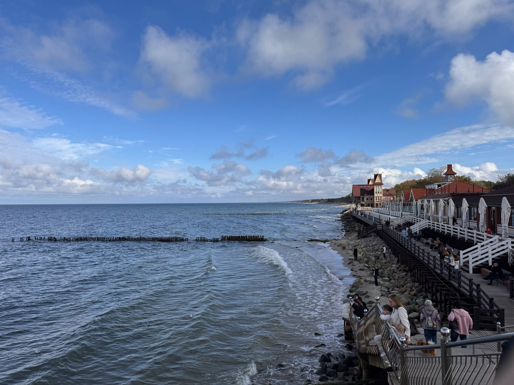

Зеленоградск · готовая прогулка
Город и рыбный обед
От центрального вокзала по Курортному проспекту — к кофе, рыбному обеду и променаду.
Остановки по порядку
- 1

Вокзал Зеленоградск-Новый
Центральный вокзал Зеленоградска. Отсюда удобно начать прогулку по курортным улицам и выйти к морю. Зеленоградск-2 — другая остановка, западнее центра.
≈ 5 мин · резерв на остановкуНа карте ↗ - 2

Курортный проспект
Городская прогулочная улица, которую удобно соединить с выходом к морю. Фасады и небольшие остановки лучше смотреть пешком.
≈ 45 мин · резерв на остановкуНа карте ↗ - 3

Хлеб
У Курхауса есть короткая остановка для хлеба и кофе. На фасаде — вывеска ремесленной пекарни. Можно зайти здесь, прежде чем снова выйти на Курортный проспект.
≈ 30 мин · резерв на остановкуНа карте ↗ - 4

Рыбное кафе на пирсе
На вывеске — «Рыбное кафе на пирсе», на сайте — «Бранч на море». Это одна остановка у променада: завтрак или рыба, а дальше — линия берега. Перед выходом загляните в меню.
≈ 60 мин · резерв на остановкуНа карте ↗ - 5

Променад Зеленоградска
Прогулочная линия вдоль моря. Карта отмечает один участок променада; продолжительность прогулки зависит от выбранного начала и места разворота.
≈ 60 мин · резерв на остановкуНа карте ↗
Резерв на остановки — около 200 минут, без переходов и ожиданий. Если время точки не задано, для плана отведено 30 минут; длительность посещения выбираете вы.
Условия посещения и источники
Вокзал Зеленоградск-Новый: в каталоге нет условия посещения с датированным источником; не подтверждено на дату сборки .
Курортный проспект: Пешеходная улица
Курортный проспект — пешеходная улица старой части Зеленоградска. Вдоль неё стоят исторические здания, работают кафе и магазины. На городскую прогулку и остановки внутри заведений закладывай время отдельно: единого расписания у них нет.
Источник: Информационно-туристический центр Зеленоградска · проверено
Хлеб: в каталоге нет условия посещения с датированным источником; не подтверждено на дату сборки .
Рыбное кафе на пирсе: в каталоге нет условия посещения с датированным источником; не подтверждено на дату сборки .
Променад Зеленоградска: Прогулка вдоль моря
Набережная тянется примерно на 2,5 км. Наверху — смотровые площадки, дорожки для бега и велосипеда; ниже — песчаный пляж. Пирс служит прогулочной площадкой.
Источник: Информационно-туристический центр Зеленоградска · проверено